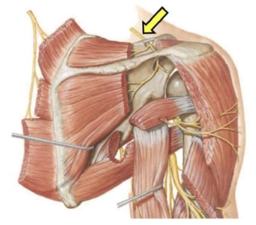

Orto Questões
Mecânica fina · 1/5Ombro · TARO 2021
Você conhece
o nervo.
Sabe onde
ele trava?
Duas passagens no caminho.
Uma delas é a mais comum.
Imagem original da questão · TARO 2021
OBSERVARIDENTIFICARLOCALIZAR
A outra chave é o lugar onde
ele mais sofre compressão.

Imagem original da questão · TARO 2021
Imagem original da questão · TARO 2021
Na imagem a seguir da anatomia do ombro, a estrutura indicada pela seta e o local mais frequente de compressão são o nervo
A seta marca o nervo que cruza a borda superior da escápula rumo à fossa supraespinal.
No caminho ele passa por duas incisuras: a supraescapular e, depois, a espinoglenoidal.
A alternativa precisa acertar as duas chaves.
O nervo passa por baixo do ligamento transverso superior, num túnel ósteo-fibroso estreito: o ponto mais comum de compressão.
A espinoglenoidal existe, mas é menos comum. Pega o nervo depois do ramo do supraespinal.
O dorsal da escápula desce pela borda medial e inerva romboides e levantador.
Nem o nervo nem o local correspondem ao da imagem.
Pega o nervo antes de qualquer ramo motor. Dor posterolateral profunda; ligamento transverso espesso ou ossificado, incisura estreita, tração repetida.
Causa típica: cisto paralabral de lesão do lábio posterossuperior, visto na ressonância. Arremesso e voleibol.
A artéria supraescapular passa por cima do ligamento transverso; o nervo, por baixo.
O ponto de compressão mais comum é a passagem sob o ligamento transverso superior, antes dos ramos para o supraespinal e o infraespinal.
Espinoglenoidal é o ponto menos comum: atrofia isolada do infraespinal.
O dorsal da escápula corre pela borda medial. Não passa pela incisura.
Trajeto, ramos e os dois pontos de compressão.
Onde cada erro troca o nervo ou o local.
A frase que resolve a questão.
Tela ilustrativa com trechos adaptados do comentário desta questão.
Crie sua conta. O limite gratuito se renova diariamente.
Duas passagens no caminho.
Uma delas é a mais comum.
Imagem original da questão · TARO 2021
Na imagem a seguir da anatomia do ombro, a estrutura indicada pela seta e o local mais frequente de compressão são o nervo
Pense na sua letra. A resposta sai no próximo story.
Cruza a borda superior da escápula: é o supraescapular, do tronco superior (C5 e C6).
Incisura supraescapular, sob o ligamento transverso superior.
Contorna a espinha pela incisura espinoglenoidal, rumo ao infraespinal.
Por isso enfraquecem o supraespinal e o infraespinal, com dor posterolateral profunda no ombro.
Nervo supraescapular e
incisura supraescapular.
Menos comum: só o infraespinal, em geral por cisto paralabral.
Borda medial: romboides e levantador. Não passa pela incisura.
Nenhuma das duas peças encaixa.
Na incisura supraescapular o nervo passa sob o ligamento transverso superior: é o ponto de compressão mais frequente.
Na espinoglenoidal, só o infraespinal enfraquece. É menos comum.
O dorsal da escápula inerva romboides e levantador da escápula.
Treine o olhar.
Conecte estrutura e local.
A certa e cada erro.
Tela ilustrativa com trechos adaptados do comentário.
Crie sua conta. O limite gratuito se renova diariamente.